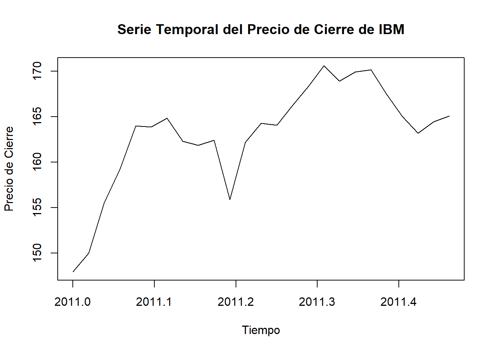

3 Creación de serie temporal
3.1 Determinar la frecuencia de la serie temporal
La frecuencia determina cuántas observaciones ocurren por unidad de tiempo. Para establecer esto, necesitamos saber la distancia entre las fechas y determinar la frecuencia.
# Verificar la diferencia entre fechas para determinar la frecuencia
date_diff <- diff(data_ibm$date) # Calcular la diferencia entre fechas
# Verificar la distribución de los intervalos
table(date_diff)## date_diff
## 6 7 8
## 1 22 1## Time difference of 7 days3.2 Crear la serie temporal con frecuencia semanal
# Crear una serie temporal a partir de 'close' y la fecha de inicio
# Frecuencia de 52 semanas por año, para datos semanales
ts_data <- ts(data_ibm$close, start = c(2011, 1), frequency = 52)
# Verificar la serie temporal
print(ts_data)## Time Series:
## Start = c(2011, 1)
## End = c(2011, 25)
## Frequency = 52
## [1] 147.93 150.00 155.50 159.21 164.00 163.85 164.84 162.28 161.83 162.43 155.89 162.18
## [13] 164.27 164.05 166.21 168.28 170.58 168.89 169.92 170.16 167.50 165.05 163.18 164.44
## [25] 165.07# Graficar la serie temporal
plot(ts_data, type = "l", main = "Serie Temporal del Precio de Cierre de IBM",
xlab = "Tiempo", ylab = "Precio de Cierre")